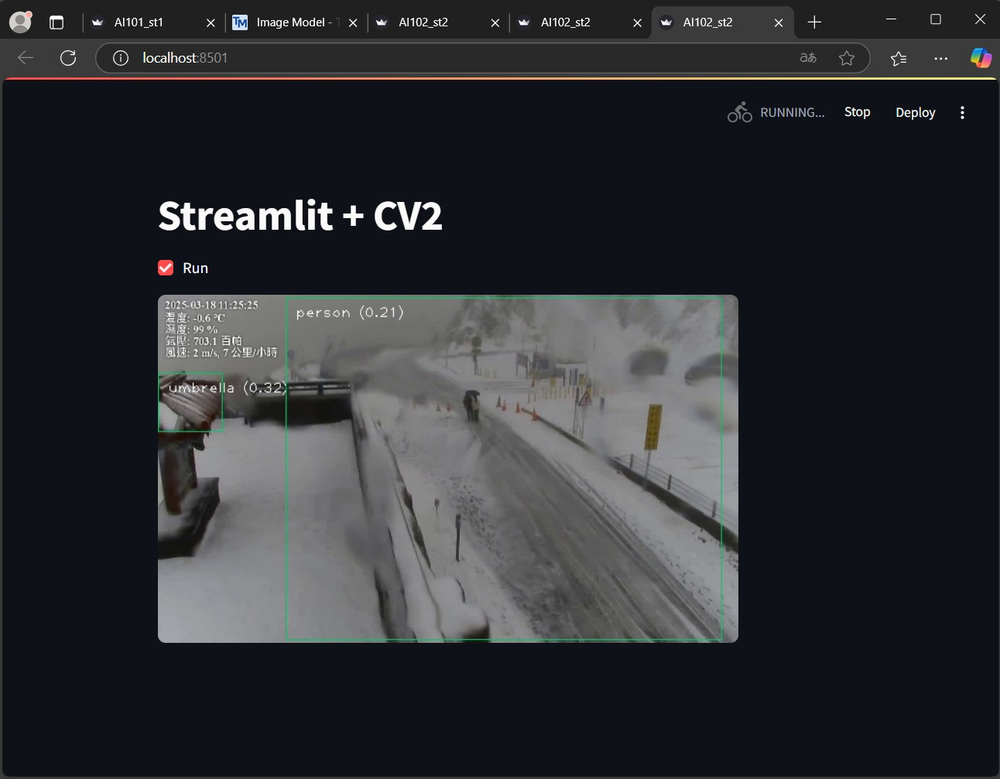

AI10X
Streamlit 串流展示 × AI 即時辨識
用 Streamlit 做網頁端即時攝影機與 YouTube 串流物件偵測。
功能簡介
AI101_st1｜即時攝影畫面串流介面：利用 Streamlit 搭配 OpenCV 實現網頁端即時攝影機畫面顯示，適用於遠端監控、互動展示與原型設計。
AI102_st2｜YouTube 串流影片物件偵測：整合 yt_dlp 串流擷取與 MediaPipe 模型，在網頁即時辨識直播影片中的物件，可應用於轉播分析與智慧監看。
成果展示

程式碼片段
AI101｜Streamlit 直播畫面顯示
import cv2
import streamlit as st
cap = cv2.VideoCapture(0)
st.title('Streamlit + CV2')
run = st.checkbox('Run')
FRAME_WINDOW = st.image([])
while run:
success, frame = cap.read()
FRAME_WINDOW.image(frame, channels='BGR')
cap.release()AI102｜YouTube 串流 × MediaPipe 物件偵測
import cv2
import streamlit as st
import yt_dlp
import mediapipe as mp
base_options = mp.tasks.BaseOptions('models/efficientdet_lite0.tflite')
options = mp.tasks.vision.ObjectDetectorOptions(base_options, score_threshold=0.2)
detector = mp.tasks.vision.ObjectDetector.create_from_options(options)
video_url = "https://www.youtube.com/live/2lVMTs_Fj0M?si=f0NLsMzwxid1-teK"
ydl_opts = {'format': 'best', 'quiet': True}
with yt_dlp.YoutubeDL(ydl_opts) as ydl:
info_dict = ydl.extract_info(video_url, download=False)
stream_url = info_dict['url']
cap = cv2.VideoCapture(stream_url)
st.title('Streamlit + CV2')
run = st.checkbox('Run')
FRAME_WINDOW = st.image([])
while run:
success, image = cap.read()
image = cv2.resize(image, (600, 360))
image_mp = mp.Image(mp.ImageFormat.SRGB, image)
detection_result = detector.detect(image_mp)
for detection in detection_result.detections:
bbox = detection.bounding_box
cv2.rectangle(image, (bbox.origin_x, bbox.origin_y),
(bbox.origin_x + bbox.width, bbox.origin_y + bbox.height), (100, 200, 0), 1)
category = detection.categories[0]
result_text = category.category_name + ' (' + str(round(category.score, 2)) + ')'
cv2.putText(image, result_text, (10 + bbox.origin_x, 20 + bbox.origin_y),
1, 1, (255, 255, 255), 1)
FRAME_WINDOW.image(image, channels='BGR')
cap.release()